着付け・基本
4記事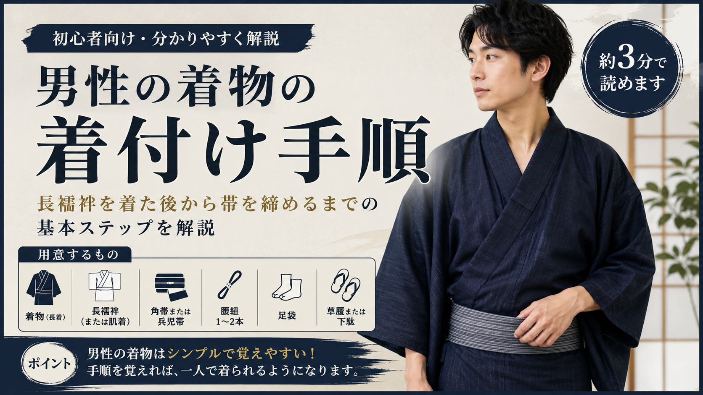
男性の着物の着付け手順（初心者向け）
羽織り方・衿の合わせ方・腰紐の結び方まで、はじめて一人で着るための基本手順。
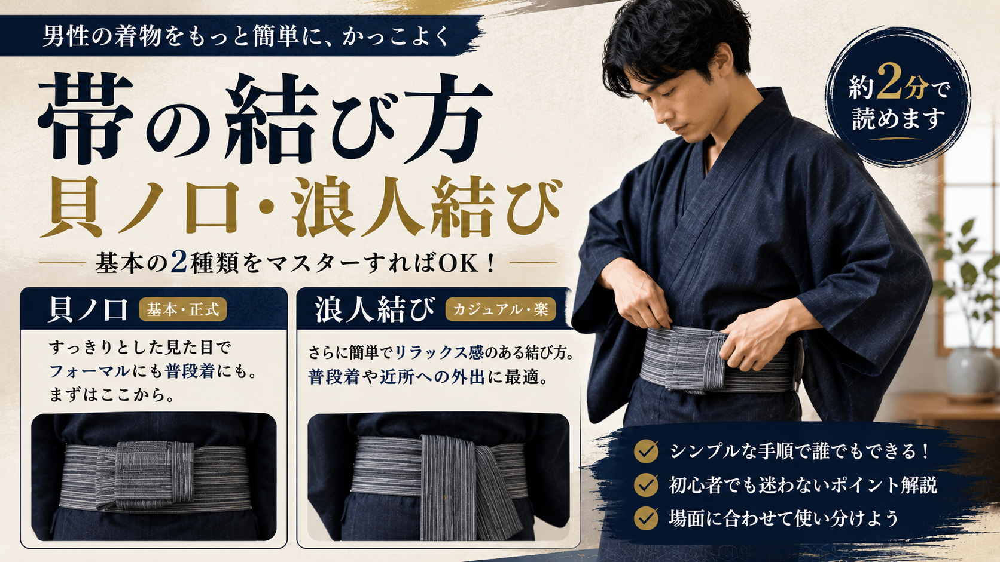
帯の結び方（貝ノ口・浪人結び）
男性の帯結びの基本2種類を手順つきで解説。まず貝ノ口を覚えれば大半の場面に対応できる。
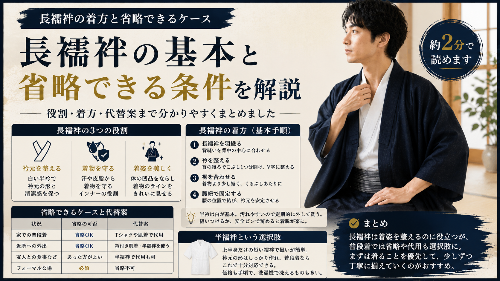
長襦袢の着方と省略できるケース
長襦袢の役割と着方、普段着なら省略できるケースと代替案。
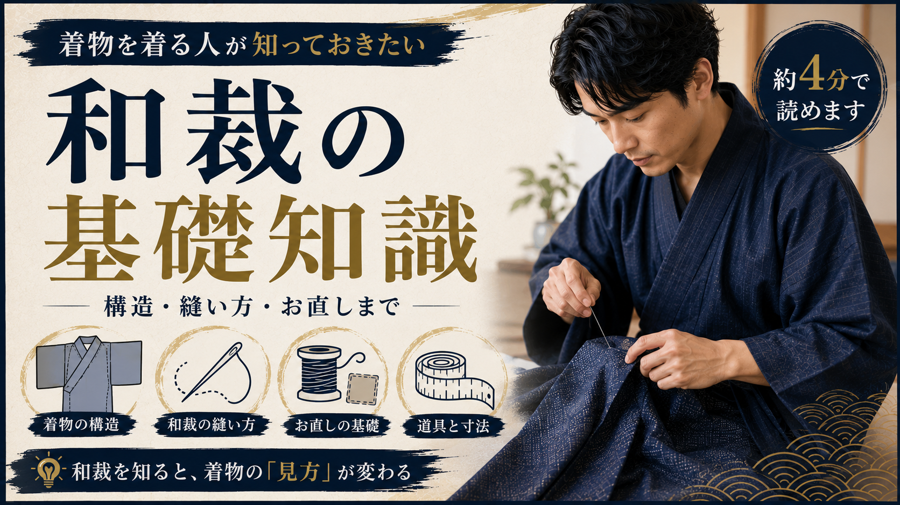
着物を着る人が知っておきたい和裁の基礎知識
着物の構造・縫い目の種類・仕立て直しの仕組みを解説。知ると着物の見方が変わります。
選び方・買い方
6記事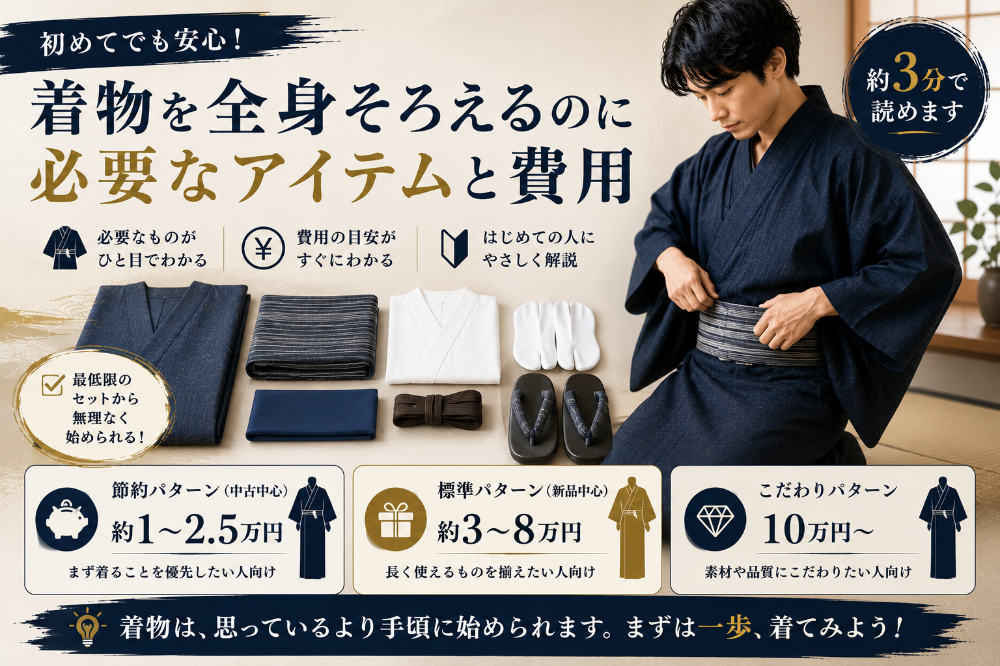
着物を全身そろえるのに必要なアイテムと費用
節約〜こだわりまで3パターンの合計費用と優先順位。1万円から始められる方法も。
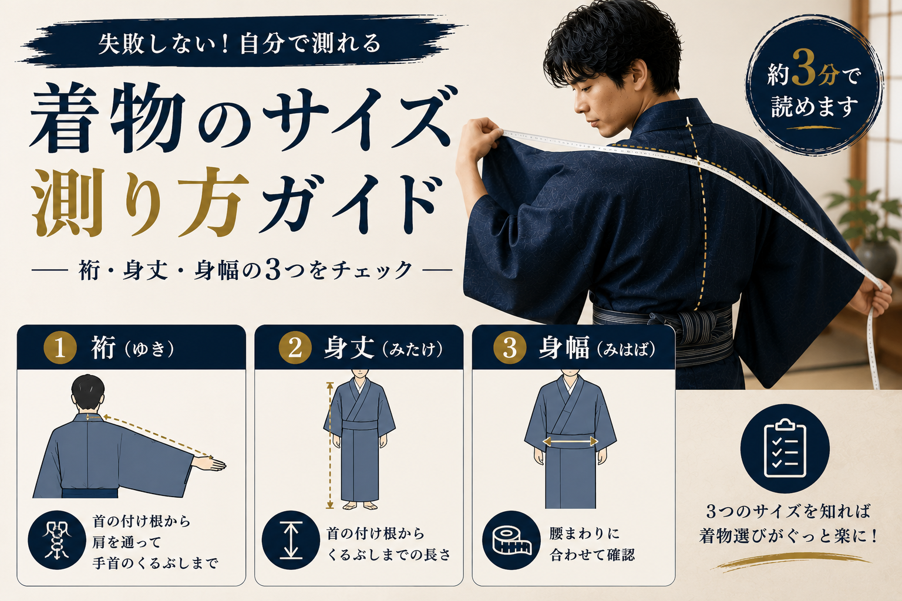
着物のサイズ測り方ガイド（裄・身丈・身幅）
自宅でできる正確な測り方と身長別サイズ対応表。リサイクル着物選びに必須の知識。

男性の着物、はじめての一枚の選び方
はじめて着物を買うなら何を選べばいいか。素材・サイズ・色の選び方を解説。
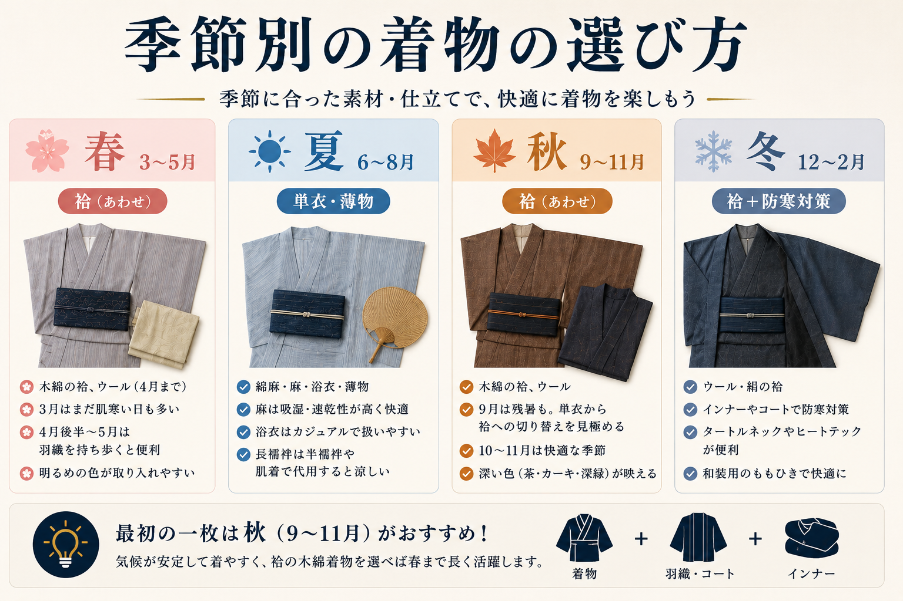
季節別の着物の選び方（春夏秋冬）
袷・単衣・薄物の違いと季節ごとのおすすめ素材。最初の一枚を買うベストシーズンも解説。
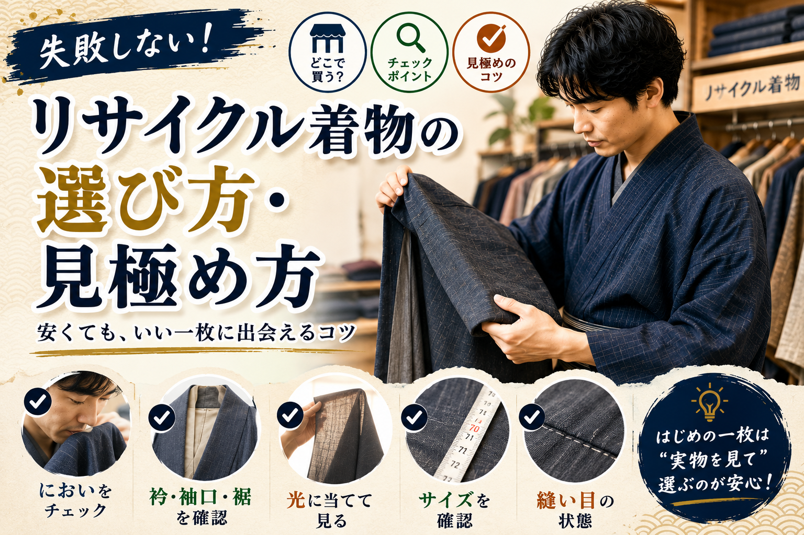
リサイクル着物の選び方・失敗しない見極め方
店舗・フリマアプリ別のチェックポイント。においやシミの確認方法と避けるべき出品の特徴。
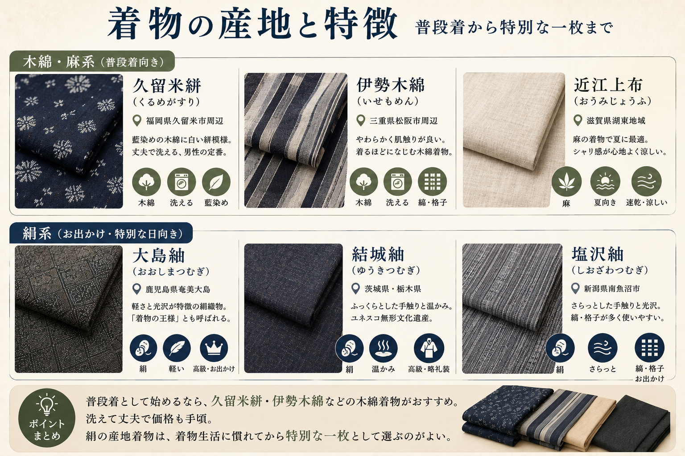
着物の産地と特徴（久留米絣・大島紬など）
産地ごとの素材・風合い・価格帯をまとめました。
浴衣
2記事普段使い・ライフスタイル
5記事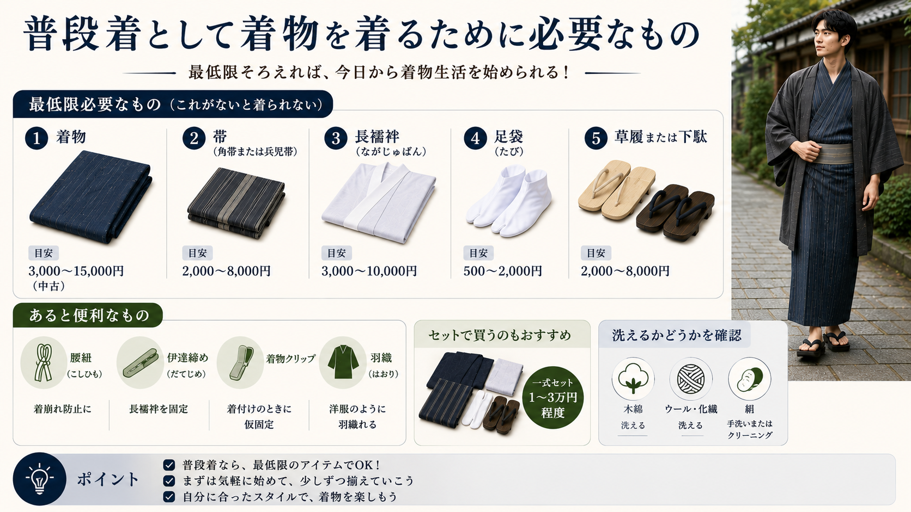
普段着として着物を着るために必要なもの
着物・帯・長襦袢・足袋…最低限必要なアイテムをリストアップ。
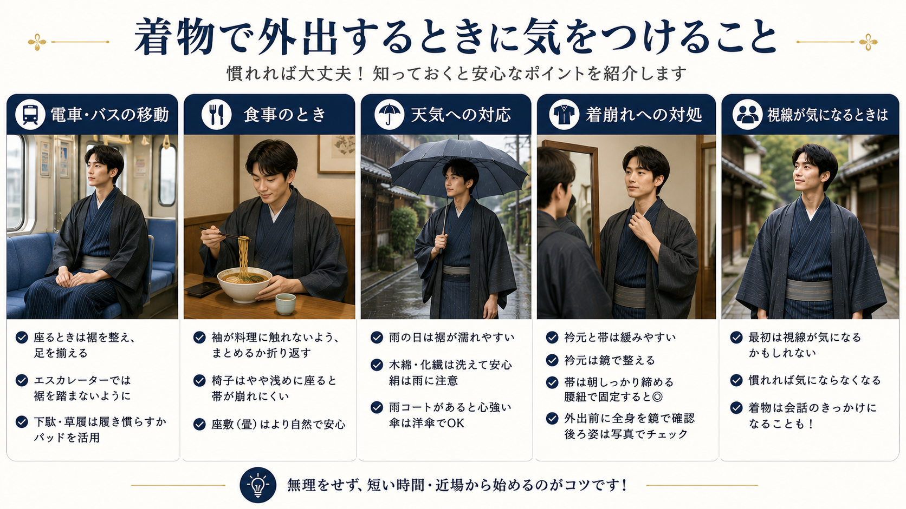
着物で外出するときに気をつけること
電車移動、飲食店、天気の変化。実際に着て外に出てみてわかったことをまとめます。
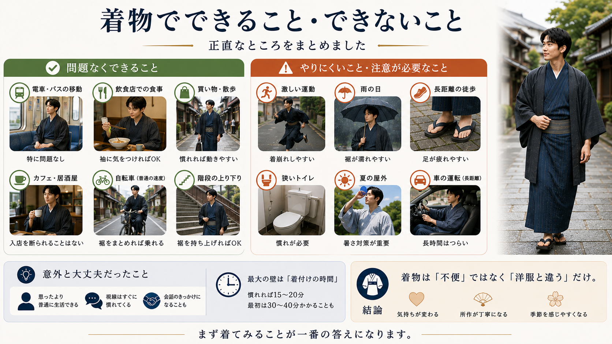
着物でできること・できないこと（正直なところ）
電車・食事・自転車・雨の日…着物生活のリアルをまとめました。
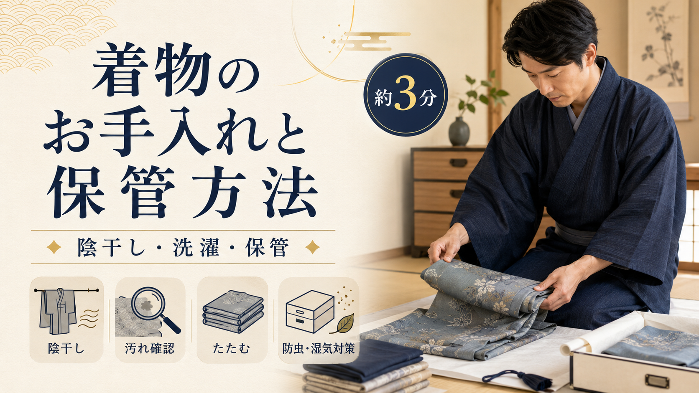
着物のお手入れと保管方法
素材別の洗い方、陰干しのコツ、カビ・虫食いを防ぐ保管術。
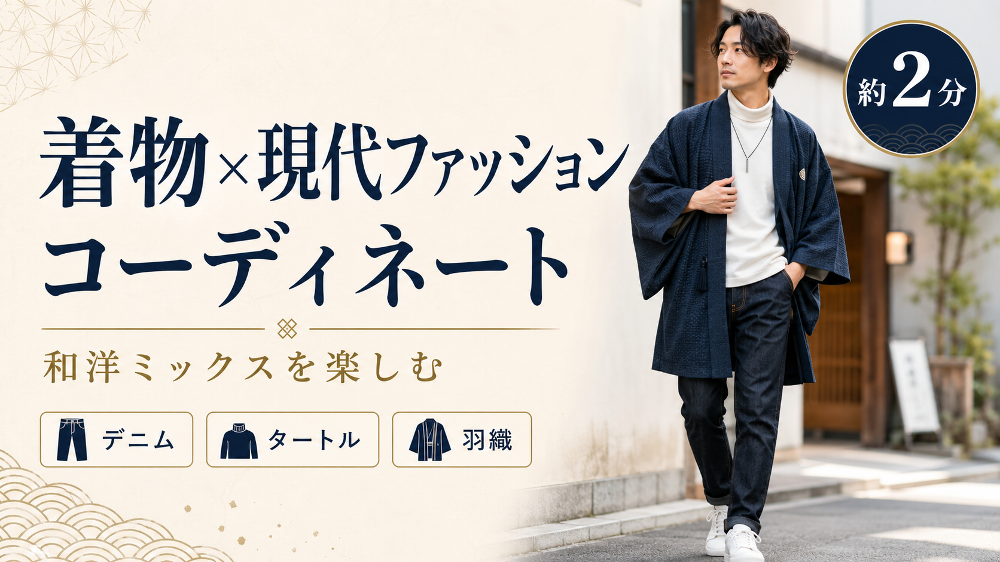
着物×現代ファッションのコーディネート
デニム・タートルネック・羽織だけ…和洋ミックスの組み合わせ例を紹介。
体験談・着物名人の話
4記事着物を始めたきっかけ——料理人の友人が教えてくれたこと
「着物を着るといい店でいいサービスを受けられる」。料理人の友人の言葉が20年以上の着物生活の始まりでした。
和裁を習って変わった着物の見方——直せる着物、捨てない着物
和裁を学んで気づいた着物のシンプルな構造。それが「捨てられる男着物を減らしたい」という思いの始まりでした。
着物を着るなら茶道・華道をかじっておくといい——所作が変わる話
着物を着るようになってから茶道・華道を習い始めた理由と、初釜に袴で参加して気づいた所作の変化。
銀座「もとじ」で着物を仕立てた話——夏の京都と花火大会へ
男着物専門店で絽の着物を誂えた体験。格式ある店での気持ちのいい接客と、その着物を着て歩いた夏の記憶。